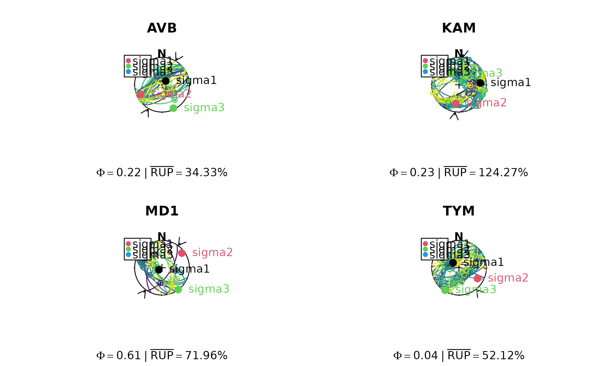

Weighted Iterative Sigma-Space Inversion (WISSI)
Source:R/stress_inversion_wissi.R
slip_inversion_wissi.RdCombines four classic fault slip inversion algorithms into a single coherent framework operating in the Yamaji-Sato 5-sphere sigma-space. Integrates the linear eigenvector approach of Yamaji & Sato (2006), the magnitude-aware upsilon criterion of Angelier (1990) and Mostafa (2005), the sense annealing strategy inspired by Hansen (2013), and the analytic uncertainty framework of Michael (1984), extended to the curved geometry of the 5-sphere.
Usage
slip_inversion_wissi(
x,
weights = NULL,
sigma_alpha_deg = 10,
gamma_max = 10,
n_anneal = 8L,
max_iter = 50L,
tol_deg = 1e-04,
run_stage4 = TRUE,
robust = TRUE,
robust_kernel = c("huber", "tukey", "andrews"),
robust_k_deg = 30,
robust_mad_k = 2.5,
init_median = TRUE
)Arguments
- x
"Fault"object where the rows are the observations, and the columns the coordinates. Object must be complete, i.e. noNAvalues. For Michael's, Angelier's, and Yamaji-Sato's methods, at least 4 rows of fault measurements are required, while Hansen's method requires at least 7.- weights
Optional length-
Nnumeric vector of non-negative data quality weights.NAvalues are replaced with the observed mean before scaling (neutral imputation). The vector is normalised internally so thatmean(weights) = 1, meaning only the ratios between weights matter. Usescale_weights()to construct weights from field quality ranks, measurement errors, and prior RUP values. Default: uniform weights.- sigma_alpha_deg
Estimated angular measurement error of slip directions in degrees. Used in Stage 4 (analytic uncertainty) to scale the perturbation covariance matrix. A value of 10 ° is a conservative default for well-measured slickenlines; increase to 20-30 ° for less certain measurements. Default:
10.- gamma_max
Maximum sharpness parameter for the sense annealing schedule (Stage 3). Controls how strongly the final solution commits to the predicted slip sense. Higher values produce sharper sense discrimination; set to
0to disable sense annealing entirely, making the inversion fully sense-agnostic in the style of Hansen (2013). Default:10.- n_anneal
Number of annealing steps in the outer sense annealing loop (Stage 3). The sharpness parameter
gammaincreases linearly from0togamma_maxovern_annealsteps. More steps give a smoother transition between sense-agnostic and sense-committed behaviour. Default:8.- max_iter
Maximum number of inner iterations per annealing step. Default:
50.- tol_deg
Convergence tolerance in angular stress distance (degrees). The inner loop terminates when the angular stress distance between successive iterates falls below this value. Because angular stress distance approximates the mean misfit angle (Yamaji & Sato 2006, Eq. 37), this tolerance has a direct physical interpretation. Default:
1e-4.- run_stage4
Logical. If
TRUE, compute the analytic uncertainty estimates via eigenvalue perturbation theory (Stage 4) and return them in theuncelement of the result. Setting toFALSEskips this step and is useful for bootstrap resampling where many inversions are performed. Default:TRUE.- robust
Logical. If
TRUE, apply iteratively reweighted robust estimation using the kernel specified byrobust_kernel. Faults with large angular misfits are progressively downweighted at each iteration, reducing the influence of outliers on the final tensor. Default:TRUE.- robust_kernel
Character string specifying the robust weighting kernel. One of:
"huber"Huber kernel: unit weight below the threshold
robust_k_deg, declining ask/alphaabove it. Gradual downweighting; the recommended default for most datasets."tukey"Tukey bisquare kernel: unit weight near zero misfit, declining smoothly to exactly zero at
robust_k_deg. Faults beyond the threshold are completely excluded. Use when genuinely bad measurements are known to be present."andrews"Andrews sine kernel: similar to Tukey but differentiable at the threshold. Slightly smoother rejection profile.
Default:
"huber".- robust_k_deg
Threshold angle in degrees for the robust kernel. Faults with angular misfit below this value receive full (or near-full) weight; faults above it are progressively downweighted or excluded depending on the chosen kernel. Should be set relative to the expected data noise level:
30° is appropriate for typical slickenline data,20° for high-quality datasets, and45° when significant scatter is expected. Default:30.- robust_mad_k
Multiplier for the MAD-based outlier flagging applied after convergence. Faults whose angular misfit exceeds
median(alpha) + robust_mad_k * 1.4826 * MAD(alpha)are reported inoutliers_mad. This is a diagnostic flag only and does not affect the inversion result. Smaller values flag more faults;2.5corresponds roughly to the 99th percentile under a normal distribution. Default:2.5.- init_median
Logical. If
TRUEandrobust = TRUE, initialise the iteration from the spatial median on S\(^5\) computed via the Weiszfeld algorithm, rather than the standard weighted eigenvector. The spatial median minimises the sum of angular stress distances to all single-fault solution poles and is substantially more resistant to outliers than the mean-based eigenvector initialisation. Has no effect whenrobust = FALSE. Default:TRUE.- normals
N x 3numeric matrix of unit fault plane normals in a right-handed Cartesian coordinate system (x = East, y = North, z = Up). Normals should point toward the footwall (upward-pointing for sub-horizontal faults).- slips
N x 3numeric matrix of unit slip direction vectors, parallel to the shear traction and pointing in the direction of hanging-wall motion. Must be perpendicular to the corresponding row ofnormals.
Value
A named list with the following elements:
sigma3x3 reduced stress tensor in the input Cartesian frame.
y6D unit y-vector on \(S^5\) representing the optimal stress tensor.
sigma1,sigma2,sigma3Unit vectors of the principal stress axes, from maximum (\(\sigma_1\)) to minimum (\(\sigma_3\)) compressive stress.
eigenvaluesEigenvalues of
sigmain decreasing order.principal_axesunit vectors of principal stress axes (max to min)
principal_valseigenvalues of
stress_tensor(decreasing)PhiShape ratio \(\Phi = (\sigma_1 - \sigma_2)/(\sigma_1 - \sigma_3) \in [0, 1]\).
alpha_degPer-fault unsigned angular misfit in degrees (0-90), the standard line metric.
alpha_signed_degPer-fault signed angular misfit in degrees (0-180). Values above 90 indicate that the recorded slip sense is opposite to the predicted shear traction direction.
mean_alphaMean unsigned angular misfit across all faults (degrees).
median_alphaMedian unsigned angular misfit (degrees). More robust than the mean in the presence of outliers.
suspected_flippedInteger vector of row indices where
alpha_signed_deg > 90, flagging faults whose recorded slip sense may be incorrect.outliers_madInteger vector of row indices flagged as outliers by the MAD criterion (only when
robust = TRUE).n_flipped_senseNumber of faults whose slip sense was corrected internally during Stage 3.
slips_correctedN x 3 matrix of sense-corrected slip vectors used in the final inversion.
muPer-fault magnitude weights \(\mu_i\) from Stage 2.
phi_sensePer-fault \(\tanh\) sense confidence values from Stage 3. Positive values indicate consistent sense; negative values indicate corrected (flipped) senses.
w_robustPer-fault robust kernel weights \(w_i^{\text{rob}}\) from the final iteration (only when
robust = TRUE).wt_combinedPer-fault combined weights \(\tilde{\omega}_i\) used in the final M5 matrix.
eigenvalue_gapDifference \(\lambda_2 - \lambda_1\) of the final \(M_5\) matrix. Larger values indicate a better-conditioned solution.
M5_eigvalsAll five eigenvalues of the final \(M_5\) matrix in decreasing order.
uncList of analytic uncertainty estimates from Stage 4 (only when
run_stage4 = TRUE), containingCov5,Cov_y6,eigval_gap,cov_eigvals,sigma1_unc_deg, andPhi_unc.n_iter_totalTotal number of inner iterations performed across all annealing steps.
Details
Algorithm stages
WISSI proceeds through five sequential stages, each addressing a specific limitation of the classical inversion methods.
Stage 1 — Initialisation. Constructs the weighted moment matrix
\(M_5 = \sum_i \omega_i \epsilon'_i \epsilon'^T_i\) in the 5D deviator
subspace of the Yamaji-Sato sigma-space and returns its
smallest-eigenvalue eigenvector as the initial stress estimate. When
robust = TRUE and init_median = TRUE, the Weiszfeld
algorithm on \(S^5\) is used instead, providing a starting point
that is resistant to leverage points from badly oriented or erroneous
fault data.
Stage 2 — Magnitude reweighting. Translates the Angelier (1990) and Mostafa (2005) upsilon (\(\upsilon_i\)) magnitude criterion into the sigma-space eigenproblem by replacing the global \(\lambda = \sqrt{3}/2\) with per-fault weights \(\mu_i = |\tau_i| / \lambda_{\max}\). Mechanically degenerate fault planes (those containing a principal stress axis, which produce near-zero shear traction) are automatically downweighted without requiring any explicit degeneracy test. Convergence is measured by the angular stress distance \(\Theta\) between successive iterates, which approximates the mean misfit angle (Yamaji & Sato 2006, Eq. 37) and therefore has a direct physical interpretation.
Stage 3 — Sense annealing. Replaces the binary majority-vote sense
resolution of Yamaji & Sato (2006) with a continuous
\(\tanh(\gamma \cdot \hat{\tau}_i \cdot \hat{s}_i)\) weighting schedule.
At small \(\gamma\) (early annealing steps) the method is effectively
sense-agnostic, as in Hansen (2013), providing robustness when slip senses
are uncertain or partially incorrect. As \(\gamma\) increases toward
gamma_max, the method commits progressively to the predicted slip
sense, recovering the accuracy of Angelier (1990) for reliable data.
Faults whose predicted and recorded senses are inconsistent have their
slip vectors flipped internally; the number of such corrections is reported
in n_flipped_sense.
Stage 4 — Analytic uncertainty. Propagates slip direction measurement
noise (sigma_alpha_deg) through the eigenproblem via first-order
perturbation theory, yielding a \(5 \times 5\) covariance matrix in
sigma-space and approximate \(1\sigma\) confidence bounds on the
principal stress axis orientations and \(\Phi\). This extends the
analytic covariance framework of Michael (1984) to the geometrically
correct curved space of the 5-sphere. The eigenvalue gap
\(\lambda_2 - \lambda_1\) of \(M_5\) serves as a condition number:
a small gap indicates that the solution is poorly separated from the next
eigenvector and that uncertainty estimates may be unreliable.
Stage 5 (polyphase) — Spectral clustering. Available via
slip_inversion_wissi_polyphase. Represents each fault by the pole of its
solution great hypercircle on \(S^5\), builds a Gaussian affinity matrix
using the angular stress distance \(\Theta\), and applies normalised
spectral clustering with automatic phase count selection via the eigengap
heuristic. WISSI is then run independently on each identified phase.
Robust estimation
When robust = TRUE, an additional misfit-based weight
\(w_i^{\text{rob}} = \kappa(\alpha_i)\) is computed at each iteration
and multiplied into the combined weight \(\tilde{\omega}_i = \omega_i
\cdot \mu_i \cdot |\phi_i| \cdot w_i^{\text{rob}}\), where \(\alpha_i\)
is the unsigned angular misfit between the predicted shear traction and the
observed slip direction, \(\mu_i\) is the magnitude weight from Stage 2,
and \(\phi_i\) is the sense confidence from Stage 3. The three available
kernels \(\kappa\) differ in tail behaviour: the Huber kernel applies a
gradual \(k/\alpha\) decay beyond the threshold and is the recommended
default; the Tukey bisquare kernel hard-zeros faults beyond the threshold
for aggressive rejection of confirmed bad measurements; the Andrews sine
kernel provides a smooth differentiable alternative to Tukey. After
convergence, faults are additionally screened using a
median-absolute-deviation (MAD) criterion that adapts automatically to the
noise level of the specific dataset, reported in outliers_mad. This
flag is purely diagnostic and does not alter the inversion result.
References
Angelier, J. (1990). Inversion of field data in fault tectonics to obtain the regional stress. III. A new rapid direct inversion method by analytical means. Geophys. J. Int., 103, 363-376.
Hansen, J.A. (2013). Direct inversion of stress from sets of fault slip data with unknown slip sense. J. Struct. Geol., 51, 54-65.
Michael, A.J. (1984). Determination of stress from slip data: faults and folds. J. Geophys. Res., 89, 11517-11526.
Mostafa, M.E. (2005). Iterative linear inversion of stress tensor from fault-slip data. J. Struct. Geol., 27, 930-940.
Pascal, C. (2022). Paleostress Inversion Techniques. Elsevier.
Yamaji, A. & Sato, K. (2006). Distances for the solutions of stress tensor inversion in relation to misfit angles that accompany the solutions. Geophys. J. Int., 167, 933-942.
Stephan (in prep)
See also
Other stress-inversion:
Fault_PT(),
slip_inversion(),
slip_inversion_angelier(),
slip_inversion_hansen(),
slip_inversion_michael(),
slip_inversion_simple(),
slip_inversion_yamaji_sato()
Other wissi:
slip_inversion_wissi_boot(),
slip_inversion_wissi_polyphase()
Examples
set.seed(20250411)
nx <- length(angelier1990)
par(mfrow = c(2, nx/2))
invisible(lapply(seq_len(nx), function(i) {
# inversion
x <- angelier1990[[i]]
res <- slip_inversion_wissi(x)
# some stress shape
phi_val <- round(res$stress_shape$phi, 2)
# misfit
rup_val <- round(res$misfit$rup_mean, 2)
# Plot the faults (color-coded by RUP%) and show the principal stress axes
stereoplot(title = names(angelier1990)[i], guides = FALSE)
stereo_shmax(res$SHmax)
fault_plot(x, col = assign_col(res$misfit$rup))
points(res$principal_axes, col = 1:3, pch = 16, cex = 1.5)
text(res$principal_axes,
label = rownames(res$principal_axes),
col = 1:3, adj = -.25
)
legend("topleft", col = 2:4, legend = rownames(res$principal_axes), pch = 16)
title(sub = bquote(Phi == .(phi_val) ~ "|" ~ bar("RUP") == .(rup_val) * "%"))
}))
